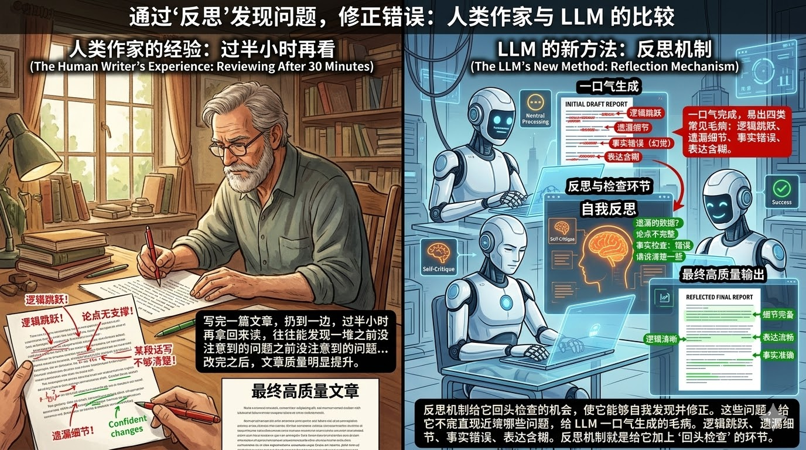
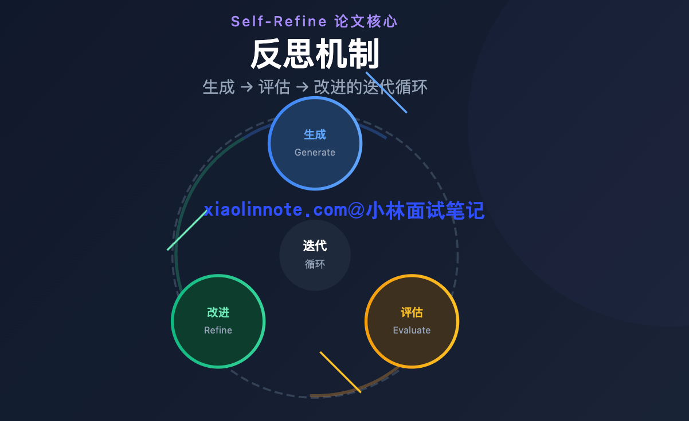
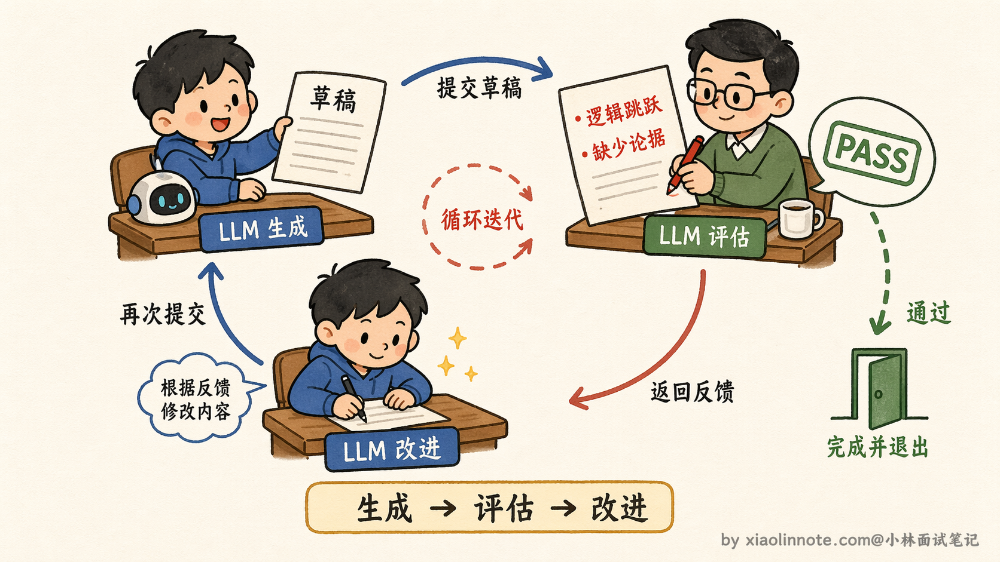
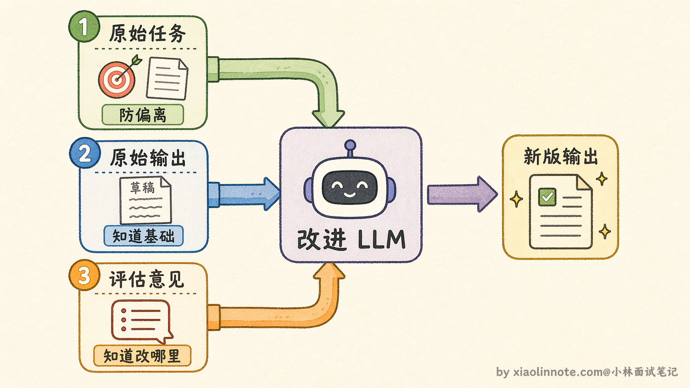
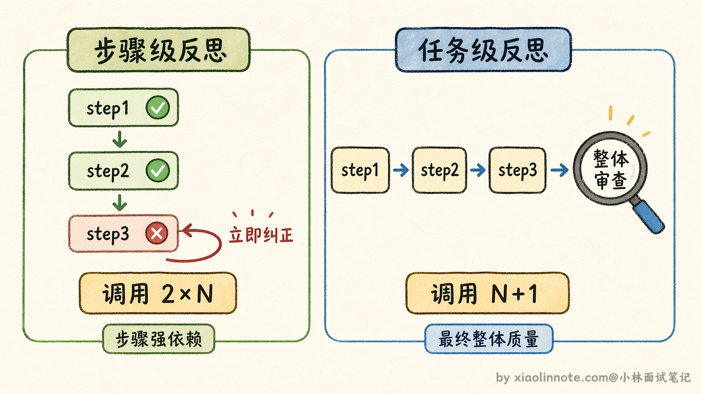
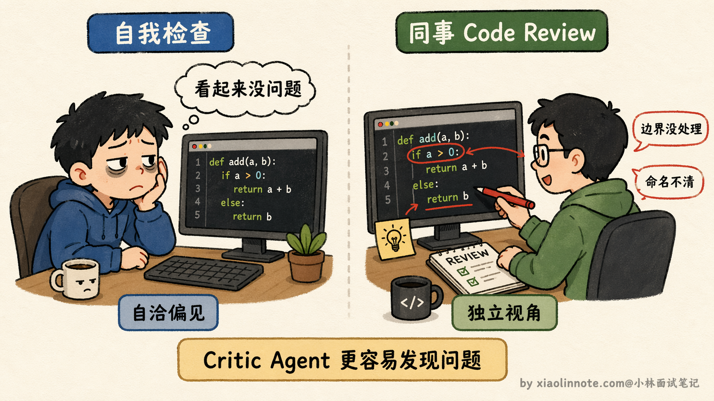
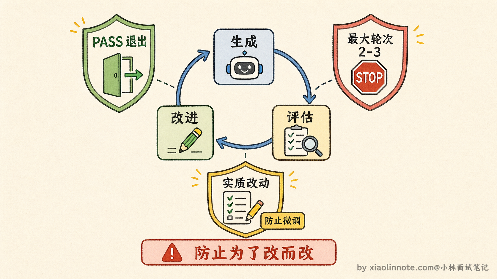

讲讲 Agent 的反思机制？为什么要用反思？具体怎么实现？
👔面试官：Agent 的反思机制你了解吗？怎么实现的？
🙋♂️我：了解，就是让 LLM 对输出不满意的时候再重新生成一次，多试几次输出质量就会提升。
👔面试官：「再生成一次」和「反思后改进」是两回事。反思不是随机重试，你知道两者的本质区别在哪吗？
🙋♂️我：反思……就是让 LLM 看看自己输出有没有问题，然后再改一下？
👔面试官：说对了一半。关键是「评估」这一步要怎么设计。你直接让 LLM「看看有没有问题」，它往往会说「输出看起来不错」，什么都发现不了。评估 prompt 里有一个最重要的设计，你知道是什么吗？
🙋♂️我：给出明确的检查维度，比如逻辑、完整性、事实准确性，这样它才有针对性地检查？
👔面试官：对，还有一个同样重要：必须有「PASS」机制，给 LLM 一个「够好了就停」的出口。没有这个，它会无限挑毛病，反而把原本对的东西改错。那你说说，反思的轮次该怎么控制？
被问到这里才意识到，反思机制是一个有完整设计的闭环，每个细节都有原因。来系统梳理一遍。
💡 简要回答
反思机制我的理解是：让 Agent 在完成一个步骤或整个任务后，自我评估输出质量，判断有没有问题，不达标就重试或调整策略。
用反思的原因是第一次输出可能不满足明确验收标准，增加一次独立评估和定向修改的机会；它不保证质量提升，评估器也可能漏检或误改，因此要与规则、测试、引用核验结合。
代价是多至少一次 LLM 调用，token 消耗和延迟都会增加，所以我在工程里通常只在质量要求高的关键节点启用反思，不是每步都做。
📝 详细解析
先从一个日常经验说起：你写完一篇文章，扔到一边，过半小时再拿回来读，往往能发现一堆之前没注意到的问题，某个句子逻辑跳跃了、某个论点没有支撑、某段话写得不够清楚。改完之后，文章质量明显提升。

LLM 也面临同样的问题。它每次生成输出，本质上是在「一口气」完成的，没有机会停下来检查。
第一次输出常见的毛病有这几类：逻辑跳跃（推理步骤不完整，中间少了关键推断）、遗漏细节（任务里要求了某些点，但没有全部覆盖到）、事实错误（模型幻觉导致的错误信息）、表达含糊（意思到了但说得不清晰）。
这些问题可以通过规则、测试、检索证据或另一个模型得到额外检查机会；“让同一个 LLM 自己看一遍”不是可靠性保证。反思机制就是把评估与改进作为显式运行时环节。
核心循环：生成 -> 评估 -> 改进
反思机制的核心思路来自 Self-Refine 论文（Madaan 等人 2023 年提出），整个流程就是「生成 -> 评估 -> 改进」的循环。

你可以用「草稿 -> 批阅 -> 修改」来类比：学生交出草稿（生成），老师批阅指出问题（评估），学生拿着批注修改（改进），改完的稿子再经过老师审阅，直到通过为止。

这个循环靠评估器和改进器两个步骤驱动。评估器可以是规则、测试、检索核验或 LLM；如果使用 LLM，让它扮演「检查者」并输出结构化结果：
任务：{task}
当前输出：
{current_output}
请评估以上输出：
1. 有没有事实错误或逻辑问题？
2. 有没有遗漏重要内容？
3. 表达是否清晰准确？
如果输出已经足够好，回复「PASS」；
否则指出具体问题并给出改进建议。
这个评估 prompt 的设计有几个值得注意的地方。
首先，它给出了明确的检查维度（事实、逻辑、完整性、表达），而不是让 LLM 自由发挥。这很重要，没有方向的评估往往流于表面，LLM 可能只是说「输出看起来不错」，没有真正找到问题。给出具体维度，它才会有针对性地逐项审查。
其次，「PASS」机制是必须有的，这是给 LLM 一个「足够好就停」的出口。如果没有这个机制，LLM 为了反思而反思，可能对一个已经很好的输出挑不必要的小毛病，反而把原本对的东西改错。
如果评估结果不是 PASS，且问题属于可修复范围，就把评估意见喂进第二个改进 prompt；不可修复或高风险问题应转人工/停止：
原始任务：{task}
当前输出：{current_output}
评估意见：{reflection}
请根据评估意见改进输出：
改进 prompt 有一个关键点：它同时传入了原始任务、原始输出、评估意见这三样东西，缺任何一个都会让改进变得盲目。只有任务没有原始输出，LLM 不知道在什么基础上改；只有原始输出没有评估意见，LLM 不知道改哪里；只有评估意见没有任务，LLM 可能改着改着偏离了原始目标。三者都在，它才能有针对性地修改，而不是把内容全部重写一遍。

评估与改进循环应在“通过验收”或硬性上限（轮数、时间、token/费用）触发时结束，不能只依赖 LLM 自己回复 PASS。
两个粒度：步骤级 vs 任务级
反思可以在两个粒度上触发，它们有不同的适用场景，代价也不一样，选哪种需要根据任务特点来判断。
步骤级反思是在每个工具调用或推理步骤完成后立即检查。它的好处是错误早发现早纠正，不会让一个小错误在后续步骤里层层放大。
想象一下 Agent 在做多步信息检索：第一步选了一个不精准的搜索关键词，后续所有步骤都在错误的信息上继续，到最后才发现，前面的工作全废了。

步骤级反思能在第一步就发现关键词的问题，马上纠正，后续步骤都建立在正确基础上。适合这种粒度的场景是步骤之间强依赖、前一步错了后面会全错的任务。代价是每一步都多一次 LLM 调用，整体延迟和 token 消耗会大幅增加，一个 10 步的任务可能实际要调用 20 次 LLM。
任务级反思是整个任务执行完之后做一次整体评估。好处是开销更小，整个任务只多一次 LLM 调用；而且从整体视角审视，能发现步骤级看不到的问题，各个步骤单独看都是对的，但整体结论前后矛盾，或者各部分之间衔接不自然，这种问题只有从整体视角才能看出来。
代价是如果任务中途某步出了大问题，到最后才发现，前面的执行都已经浪费了。适合步骤之间相对独立、最终输出的整体质量更重要的场景，比如生成一份报告。
多 Agent 互评：为什么「他人审视」比「自我检查」更好
除了单 Agent 的自我反思，还有一种效果通常更好的方式，多 Agent 互评：专门设置一个独立的 Critic Agent，让它来审查执行 Agent 的输出。
为什么独立的审查比自我反思效果更好？你可以类比代码 review 的场景：一个人写完代码自己检查，和让同事来 review，发现的问题质量往往不一样。自己写的东西自己看，容易「视觉疲劳」，会不自觉地补脑跳过问题，潜意识里倾向于认为自己的逻辑是正确的。
在 LLM 里同样可能出现自洽偏差：同一模型的评估不等于独立事实核验。独立 Critic、规则或测试可以提供不同信号，但 Critic 也可能犯错，需测量误报/漏报并保留证据。
互评的具体流程是：执行 Agent 生成输出，Critic Agent 审查并给出具体批注，执行 Agent 根据批注修改，Critic Agent 再次确认。

什么时候值得用这种方式？有可执行测试、引用核验或明确验收标准的场景，例如生成代码后运行测试、报告逐条核对来源。代价是额外调用和系统复杂度，不能只凭“独立 Agent”就假设更客观。
进阶：Reflexion 和 LATS，把反思做得更深
前面讲的 Self-Refine 是最基础的反思模式，学术界在此基础上还有更进一步的探索，了解这些能帮你在面试里展现更深的理解。
第一个是 Reflexion（Shinn 等人 2023 年提出，和 Self-Refine 是同年的工作），这篇论文的核心思路是：不仅让 Agent 反思当前输出的质量，还要让它把「失败经验」存下来，下次遇到类似任务时直接参考，避免重蹈覆辙。这里的"类似"通常通过把经验记忆塞到当前任务的上下文里，让 LLM 自己在生成时参考（而不是靠严格的相似度匹配去检索）。
你可以理解成 Self-Refine 是「写完作文当场改」，Reflexion 是「把这次犯的错记在笔记本上，下次写作文之前先翻一遍笔记」。
Reflexion 引入了「经验记忆」的概念，每次反思产生的教训可以作为后续任务的参考上下文。写入长期存储前要验证适用范围、版本和来源，避免把一次性错误经验传播到其他租户或未来任务。
LATS 等把反思与树搜索结合的方案属于论文/研究模式；它们会同时增加路径探索、评估和状态管理成本。是否适合生产不能仅按论文名称判断，应看任务可验证性、预算、延迟和实现成熟度。
还有一种思路叫辩论式反思，不是让一个 Agent 自己审查自己，而是让多个 Agent 互相辩论。比如设置一个「正方 Agent」和一个「反方 Agent」，正方提出一个方案，反方专门挑毛病、提反对意见，正方再针对反对意见优化方案。这种对抗式的反思比单方面审查更能暴露深层问题，因为反方的「职责」就是找漏洞，它会比一个只是「检查一下有没有问题」的 Critic Agent 更积极地挖掘问题。工程上偶尔会在高质量要求的场景里用到这个模式，比如重要的商业决策分析、法律文本审查等。
工程权衡：怎么用才合理？
理解了反思机制的原理和进阶方案之后，还需要知道工程上怎么合理地用它，不然反而会让系统变慢、变贵、甚至陷入死循环。
什么场景值得开反思？输出质量要求高、错误代价大的关键节点，比如最终报告生成、重要决策的推理过程，以及任务比较复杂、LLM 容易遗漏细节的场景，这些是反思最能发挥价值的地方。
什么场景不值得开？简单直接的任务可能不值得增加评估调用；实时性要求高的场景也要先测量额外延迟，并考虑规则校验或异步质检等替代方案。
最重要的是防死循环，必须设置最大轮次、时间和费用上限，不能依赖 LLM 自己判断停止。轮数不是固定的 2-3 轮：应根据错误代价、验收通过率和延迟预算配置，并在没有进步时提前停止。

最后要对整体代价有清醒认知：每轮反思通常至少包含评估和改进，具体调用数取决于是否规则校验、是否并行和是否提前通过。应记录每轮的质量增益、延迟、token/费用和副作用，反思不是免费的，也不是每步都做。
反思的运行时边界可以画成：
flowchart LR
G[生成草稿/执行结果] --> E[评估器：规则、测试、引用或 Critic]
E --> D{通过验收?}
D -- 是 --> F[提交结果并记录证据]
D -- 否，能修复 --> I[带原任务、草稿和批注改进]
I --> E
D -- 否，不能修复/超预算 --> H[停止、人工接管或回退]
B[最大轮数、超时、费用与副作用策略] -.约束.-> E
B -.约束.-> I评估器的输出最好包含 pass、问题列表、证据位置、严重级别和建议动作。对事实性内容，优先使用可执行测试、来源核对或业务规则；模型自评只能作为一个信号。
🎯 面试总结
回顾开头踩的雷，把反思说成「不满意就重新生成」是最常见的误区，这说明没有理解反思机制的核心：它是「生成 -> 评估 -> 改进」的有结构的闭环，不是随机重试。
答好这道题有几个要点。
首先要说清楚反思的闭环结构：两个 prompt 各司其职，评估 prompt 专门找问题，改进 prompt 结合原始任务和批注做定向修改，缺任何一个环节都会失效。
其次，评估 prompt 的两个关键设计要能说出来：给出具体检查维度，以及设置「PASS」出口，否则 LLM 要么流于表面、要么无限挑毛病。
第三，步骤级和任务级反思的区别很容易被忽略：前者错误发现得早但开销大，后者能看到整体问题但前期做的无效工作难以挽回，要根据任务特点选择。
第四，最容易被遗漏的工程要点是防死循环：必须硬性设置最大轮次、超时和费用预算，具体轮数按验收收益与风险配置，不能依赖 LLM 自己停止。
最后，如果能提到独立 Critic、规则或测试可以补充自我反思，同时说明它们也会误判，需要证据与指标，会比简单声称“互评一定更好”更完整。